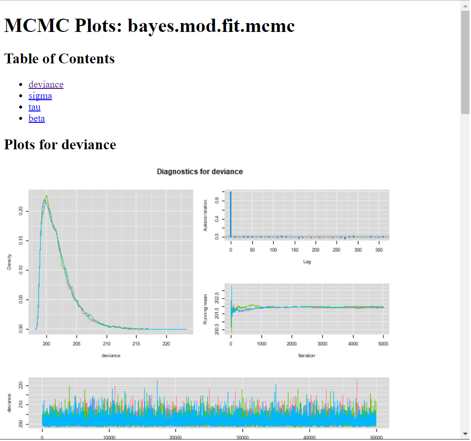

Inferência bayesiana
Quando estamos falando de Inferência nosso objetivo normalmente é tentar verificar alguma informação sobre uma quantidade desconhecida.
Para isso devemos utilizar toda informação disponível, seja ela objetiva ou subjetiva (isto é, vinda de umam amostra ou de algum conhecimento préveo ou intuitivo)
Segundo o ponto de vista Bayesiano essa informação subjetiva também será incorporada na análise graças ao teorema de bayes.
Como no ponto de vista Bayesiano atribuímos aleatoriedade ao parâmetro, nossa “crença” será representada por uma distribuição de probabilidade (ou modelo probabilístico)
Teorema de bayes: \[ p(\theta|x)=\frac{p(x,\theta)}{p(x)}=\frac{p(x|\theta)p(\theta)}{p(x)} \]
onde:
- \(p(x|\theta)\): função de verossimilhança (modelo)
- \(p(\theta)\): distribuição a priori
- \(p(x)\): distribuição marginal de \(x\).
A estimação muitas vezes envolve o cálculo de integrais nada simples analiticamente porém, alguns algorítimos como o amostrador de Gibbs pode relizar aproximações muito relevantes.
Modelo linear bayesiano
Para entender como funciona o modelo bayesiano, primeiramente vamos começar com algo bem simples, suponha:
\[ Y_i \sim N(\mu_i,\tau) \] onde \(\mu\) é definido como \(\mu_i= X \mathbf{\beta}\).
Incialmente vamos considerar que não existe relação nenhuma, então utilizaremos a priori:
\[ \beta \sim N(0,\tau_{\beta}) \]
onde \(\tau\) é conhecido.
Nem sempre é uma tarefa simples determinar a distribuição posteri de um modelo bayesiano e é neste ponto que o pacote jagsserá bastante útil (existem outras alternativas como o WinBugs, OpenBugs, Stan, mas aqui resolvi trazer apenas o jags por possuir vantagens bem interessantes.)
Jags
O pacote R2jags é exatamente o que seu nome significa: “Just Another Gibbs Sampler”. Possui as mesmas funcionalidades do nosso querido OpenBugs possibilitando também que seja utilizado inteiramente dentro do ambiente R.
Assim como o OpenBugs, ele também trabalha chamando o software oficial que precisa ser baixado no site.
Para começar a utilizar basta baixar o pacote e acessá-lo na biblioteca:
library(R2jags)Declarando o modelo
A base de dados que será utilizada para ajustar o modelo será a base nativa do R chamada trees:
X<-trees[,1:2] #Matriz de variáveis explanatórias
Y<- trees[,3] #Vetor da variável resposta
p <- ncol(X) #p é o número de parâmetros do modelo (nesse caso é o número de colunas)
n <- nrow(X) #n é o número de observações do modeloO modelo deve estar declarado e salvo em um arquivo .txt (ou mesmo um outro arquivo .r) da seguinte maneira:
### Declarando o modelo Bayesiano
sink("linreg.txt")
cat("
model {
# Prioris
for(j in 1:p)
{
beta[j] ~ dnorm(mu.beta, tau.beta)
}
sigma ~ dunif(0, 100)
tau <- 1/ (sigma * sigma)
# Verossimilhança
for (i in 1:n) {
y[i] ~ dnorm(mu[i], tau)
mu[i] <- inprod(X[i,], beta)
}
}
",fill=TRUE)
sink()Uma vez que o modelo esta declarado, é a hora de nomear os parametros da função que fará o ajuste do modelo
#Parametros da Priori
mu.beta <- 0
tau.beta <- 0.001
#Set Working Directory
wd <- getwd()
# Junte os dados em uma lista
win.data <- list(X=X,y=Y,p=p,n=n,mu.beta=mu.beta,tau.beta=tau.beta)
# Função de inicialização
inits <- function(){ list(beta=rnorm(p), sigma = rlnorm(1))}
# Os parametros que desejamos estimar
params <- c("beta","sigma","tau")
# Caracteristicas do MCMC
n.burnin <- 500 #Número de iterações que serão descartadas
n.thin <- 10 #para economizar memória e tempo de computação se n.iter for grande
n.post <- 5000
n.chains <- 3 #Número de cadeias
n.iter <- n.burnin + n.thin*n.post #Número de iteraçõesImplementando o modelo
Após ter em mãos todos esses resultados, já podemos ajustar o modelo com o comando jags(), veja:
bayes.mod.fit <-jags(data = win.data,
inits = inits,
parameters = params,
model.file = "linreg.txt", # O arquivo "linreg.txt" deve estar no mesmo diretório
n.iter = n.iter,
n.thin=n.thin,
n.burnin=n.burnin,
n.chains=n.chains,
working.directory=wd,DIC = T)## Compiling model graph
## Resolving undeclared variables
## Allocating nodes
## Graph information:
## Observed stochastic nodes: 31
## Unobserved stochastic nodes: 3
## Total graph size: 166
##
## Initializing modelprint(bayes.mod.fit, dig = 3)## Inference for Bugs model at "linreg.txt", fit using jags,
## 3 chains, each with 50500 iterations (first 500 discarded), n.thin = 10
## n.sims = 15000 iterations saved
## mu.vect sd.vect 2.5% 25% 50% 75% 97.5% Rhat n.eff
## beta[1] 5.043 0.434 4.179 4.760 5.041 5.327 5.897 1.001 9400
## beta[2] -0.477 0.077 -0.630 -0.528 -0.477 -0.426 -0.325 1.001 7700
## sigma 6.443 0.896 4.966 5.811 6.354 6.963 8.466 1.001 15000
## tau 0.025 0.007 0.014 0.021 0.025 0.030 0.041 1.001 15000
## deviance 201.903 2.679 198.876 199.959 201.212 203.117 208.898 1.001 15000
##
## For each parameter, n.eff is a crude measure of effective sample size,
## and Rhat is the potential scale reduction factor (at convergence, Rhat=1).
##
## DIC info (using the rule, pD = var(deviance)/2)
## pD = 3.6 and DIC = 205.5
## DIC is an estimate of expected predictive error (lower deviance is better).Com os resultados em mãos podemos avaliar o ajuste do modelo, o jags nos fornece os intervalos de credibilidade e o Rhat, que é a convergência da cadeia, a princípio vamos apenas considerar o fato de que quanto mais próximo de 1, melhor são as estimativas.
Não vou me extender neste post com a interpretação do modelo pois o objetivo esta sendo mostrar a funcionalidade do jags em conjunto com o R.
Diagnósticos do modelo com mcmcplots
Para o diagnóstico do modelo podemos utilizar o pacote mcmcplots que fornece de maneira bem agradável os resultados gerados pelo amostrador, primeiramente vamos carregar o pacote:
library(mcmcplots)Em seguida precisar informar para o R que o resultado do algorítimo se trata de um objeto mcmc, portanto:
bayes.mod.fit.mcmc <- as.mcmc(bayes.mod.fit)
summary(bayes.mod.fit.mcmc)##
## Iterations = 1:49991
## Thinning interval = 10
## Number of chains = 3
## Sample size per chain = 5000
##
## 1. Empirical mean and standard deviation for each variable,
## plus standard error of the mean:
##
## Mean SD Naive SE Time-series SE
## beta[1] 5.04302 0.434040 0.0035439 0.0035438
## beta[2] -0.47719 0.077431 0.0006322 0.0006238
## deviance 201.90287 2.678566 0.0218704 0.0228989
## sigma 6.44317 0.896200 0.0073174 0.0073177
## tau 0.02544 0.006785 0.0000554 0.0000554
##
## 2. Quantiles for each variable:
##
## 2.5% 25% 50% 75% 97.5%
## beta[1] 4.17857 4.76002 5.04062 5.32705 5.89655
## beta[2] -0.62983 -0.52801 -0.47671 -0.42624 -0.32464
## deviance 198.87616 199.95891 201.21200 203.11696 208.89847
## sigma 4.96640 5.81106 6.35354 6.96267 8.46609
## tau 0.01395 0.02063 0.02477 0.02961 0.04054O pacote nos fornece alguns tipos de gráficos para diagnóstico
caterplot(bayes.mod.fit.mcmc) #Observando todas as estimativas
caterplot(bayes.mod.fit.mcmc,parms = params) #Observando as estimativas de todos os parâmetros menos o desvio
denplot(bayes.mod.fit.mcmc) #Densidade das estimativas de cada cadeia
traplot(bayes.mod.fit.mcmc,greek = T) #Avaliando a convergência
E por fim, para diagnósticos rápidos, pode produzir arquivos html com traço, densidade e autocorrelação.
O comando traça tudo em uma página e os arquivos serão exibidos em seu navegador de internet padrão.
mcmcplot(bayes.mod.fit.mcmc)Vai retornar um relatório resumido para todos os parâmetros como nesta imagem da internet como:
{kind=link}

Como o objetivo do post é trazer a funcionalidade do pacote, vou apenas deixar ilustrado quais são algumas das funções mais comumente utilizadas para avaliar estatísticamente o desempenho dos modelos.
Diagnosticos estatísticos do modelo:
#Mais diagnosticos:
gelman.plot(bayes.mod.fit.mcmc)
geweke.diag(bayes.mod.fit.mcmc)## [[1]]
##
## Fraction in 1st window = 0.1
## Fraction in 2nd window = 0.5
##
## beta[1] beta[2] deviance sigma tau
## 0.7169 -0.5513 0.2267 -0.6655 0.5061
##
##
## [[2]]
##
## Fraction in 1st window = 0.1
## Fraction in 2nd window = 0.5
##
## beta[1] beta[2] deviance sigma tau
## -0.7505 0.6383 -0.1087 -0.3117 0.1284
##
##
## [[3]]
##
## Fraction in 1st window = 0.1
## Fraction in 2nd window = 0.5
##
## beta[1] beta[2] deviance sigma tau
## -0.27680 0.51656 0.51645 -0.46390 0.07078geweke.plot(bayes.mod.fit.mcmc)


raftery.diag(bayes.mod.fit.mcmc)## [[1]]
##
## Quantile (q) = 0.025
## Accuracy (r) = +/- 0.005
## Probability (s) = 0.95
##
## Burn-in Total Lower bound Dependence
## (M) (N) (Nmin) factor (I)
## beta[1] 20 39950 3746 10.70
## beta[2] 20 38030 3746 10.20
## deviance 20 38660 3746 10.30
## sigma 20 37410 3746 9.99
## tau 20 37410 3746 9.99
##
##
## [[2]]
##
## Quantile (q) = 0.025
## Accuracy (r) = +/- 0.005
## Probability (s) = 0.95
##
## Burn-in Total Lower bound Dependence
## (M) (N) (Nmin) factor (I)
## beta[1] 20 35610 3746 9.51
## beta[2] 20 38030 3746 10.20
## deviance 20 39300 3746 10.50
## sigma 20 38660 3746 10.30
## tau 20 37410 3746 9.99
##
##
## [[3]]
##
## Quantile (q) = 0.025
## Accuracy (r) = +/- 0.005
## Probability (s) = 0.95
##
## Burn-in Total Lower bound Dependence
## (M) (N) (Nmin) factor (I)
## beta[1] 20 37410 3746 9.99
## beta[2] 20 38030 3746 10.20
## deviance 20 36200 3746 9.66
## sigma 20 37410 3746 9.99
## tau 20 36800 3746 9.82heidel.diag(bayes.mod.fit.mcmc)## [[1]]
##
## Stationarity start p-value
## test iteration
## beta[1] passed 1 0.648
## beta[2] passed 1 0.700
## deviance passed 1 0.558
## sigma passed 1 0.180
## tau passed 1 0.259
##
## Halfwidth Mean Halfwidth
## test
## beta[1] passed 5.0453 0.012216
## beta[2] passed -0.4777 0.002170
## deviance passed 201.9045 0.075352
## sigma passed 6.4342 0.024569
## tau passed 0.0255 0.000187
##
## [[2]]
##
## Stationarity start p-value
## test iteration
## beta[1] passed 1 0.374
## beta[2] passed 1 0.302
## deviance passed 1 0.995
## sigma passed 1 0.661
## tau passed 1 0.882
##
## Halfwidth Mean Halfwidth
## test
## beta[1] passed 5.0495 0.01197
## beta[2] passed -0.4784 0.00214
## deviance passed 201.9233 0.07439
## sigma passed 6.4479 0.02502
## tau passed 0.0254 0.00019
##
## [[3]]
##
## Stationarity start p-value
## test iteration
## beta[1] passed 1 0.729
## beta[2] passed 1 0.699
## deviance passed 1 0.669
## sigma passed 1 0.614
## tau passed 1 0.750
##
## Halfwidth Mean Halfwidth
## test
## beta[1] passed 5.0342 0.011904
## beta[2] passed -0.4755 0.002041
## deviance passed 201.8808 0.083175
## sigma passed 6.4474 0.024934
## tau passed 0.0254 0.000187Diagnostico de convergencia rapida: superdiag
Uma função muito conveniente para analisar representações numéricas de diagnósticos em um ajuste é o pacote superdiag de Tsai, Gill e Rapkin, 2012 que trás uma série de estatísticas para avaliar o desempenho dos ajustes do modelo.
library(superdiag)
superdiag(bayes.mod.fit.mcmc, burnin = 100)## Number of chains = 3
## Number of iterations = 5000 per chain before discarding the burn-in period
## Burn-in period = 100 per chain
## Sample size in total = 14703
##
## ****************** The Geweke diagnostic: ******************
## Windows:
## chain 1 chain 2 chain 3
## From start 0.1 0.761 0.0948
## From stop 0.5 0.152 0.4664
##
## Z-scores:
## chain 1 chain 2 chain 3
## beta[1] 0.8507 0.4175 0.25135
## beta[2] -0.6151 -0.2380 -0.06332
## deviance -0.3843 0.3897 0.81127
## sigma -0.6795 -1.2480 -0.07431
## tau 0.6354 1.1254 -0.20423
##
## *************** The Gelman-Rubin diagnostic: ***************
## Potential scale reduction factors:
## Point est. Upper C.I.
## beta[1] 1.0002 1.0007
## beta[2] 1.0001 1.0005
## deviance 1.0005 1.0006
## sigma 0.9999 0.9999
## tau 1.0000 1.0002
##
## Multivariate psrf: 1.0002
##
## ************* The Heidelberger-Welch diagnostic ************
## Chain 1:
## epsilon=0.1, alpha=0.05
## Stationarity start p-value
## test iteration
## beta[1] passed 1 0.5508
## beta[2] passed 1 0.6059
## deviance passed 1 0.3960
## sigma passed 1 0.1332
## tau passed 1 0.1852
##
## Halfwidth Mean Halfwidth
## test
## beta[1] passed 5.04566 0.0123509
## beta[2] passed -0.47775 0.0021941
## deviance passed 201.89882 0.0759837
## sigma passed 6.43278 0.0247998
## tau passed 0.02549 0.0001887
##
## Chain 2:
## epsilon=0.17, alpha=0.01
## Stationarity start p-value
## test iteration
## beta[1] passed 1 0.4153
## beta[2] passed 1 0.3489
## deviance passed 1 0.9720
## sigma passed 1 0.5445
## tau passed 1 0.8137
##
## Halfwidth Mean Halfwidth
## test
## beta[1] passed 5.04885 0.0120792
## beta[2] passed -0.47829 0.0021594
## deviance passed 201.91517 0.0750212
## sigma passed 6.44628 0.0252348
## tau passed 0.02544 0.0001923
##
## Chain 3:
## epsilon=0.14, alpha=0.005
## Stationarity start p-value
## test iteration
## beta[1] passed 1 0.8291
## beta[2] passed 1 0.8502
## deviance passed 1 0.6469
## sigma passed 1 0.5917
## tau passed 1 0.6661
##
## Halfwidth Mean Halfwidth
## test
## beta[1] passed 5.03531 0.0120225
## beta[2] passed -0.47566 0.0021479
## deviance passed 201.87973 0.0842294
## sigma passed 6.44738 0.0252513
## tau passed 0.02542 0.0001896
##
## *************** The Raftery-Lewis diagnostic ***************
## Chain 1:
## Convergence eps = 0.001
## Quantile (q) = 0.025
## Accuracy (r) = +/- 0.005
## Probability (s) = 0.95
##
## Burn-in Total Lower bound Dependence
## (M) (N) (Nmin) factor (I)
## beta[1] 30 40170 3746 10.70
## beta[2] 20 38200 3746 10.20
## deviance 20 38850 3746 10.40
## sigma 10 37560 3746 10.00
## tau 20 36950 3746 9.86
##
## Chain 2:
## Convergence eps = 0.005
## Quantile (q) = 0.1
## Accuracy (r) = +/- 5e-04
## Probability (s) = 0.95
##
## You need a sample size of at least 1382926 with these values of q, r and s
##
## Chain 3:
## Convergence eps = 2e-04
## Quantile (q) = 0.01
## Accuracy (r) = +/- 5e-04
## Probability (s) = 0.975
##
## You need a sample size of at least 198946 with these values of q, r and s
##
## ************* The Hellinger distance diagnostic ************
## Between chains:
## Min Max
## beta[1] 0.03051 0.03156
## beta[2] 0.02839 0.03520
## deviance 0.03087 0.03431
## sigma 0.01917 0.02645
## tau 0.02214 0.02893
##
## Within chain 1:
## 980 1960 2940 3920
## beta[1] 0.04859 0.04801 0.05292 0.04812
## beta[2] 0.04997 0.04971 0.06098 0.04418
## deviance 0.05938 0.05878 0.04371 0.04635
## sigma 0.05055 0.05103 0.04574 0.04512
## tau 0.04505 0.04066 0.04975 0.05126
##
## Within chain 2:
## 980 1960 2940 3920
## beta[1] 0.04430 0.03712 0.03595 0.04523
## beta[2] 0.05369 0.04367 0.03696 0.05307
## deviance 0.04608 0.04331 0.03955 0.04300
## sigma 0.03454 0.05825 0.04092 0.03750
## tau 0.03870 0.04064 0.03877 0.03388
##
## Within chain 3:
## 980 1960 2940 3920
## beta[1] 0.03974 0.03482 0.04128 0.03791
## beta[2] 0.04523 0.03781 0.03239 0.04122
## deviance 0.05892 0.05512 0.03662 0.04346
## sigma 0.03560 0.03910 0.04235 0.03468
## tau 0.03383 0.03675 0.02716 0.02924Para finalizar, outra função que pode ser útil pata atualizando o modelo, se necessário - por exemplo, se não houver convergência ou pouca convergencia:
bayes.mod.fit.upd <- update(bayes.mod.fit, n.iter=1000)
bayes.mod.fit.upd <- autojags(bayes.mod.fit)Muito a estudar
Assim como toda a Estatística, inferência bayesiana não funciona se a teoria não for aplicada corretamente. É uma ferramenta muito poderosa e necessita ser usada com cautela pois demanda bastante o uso de metodologias estatísticas.
Como dizia o tio Ben: “grandes poderes trazem grandes responsabilidades” então vamos tomar cuidado com os resultados que encontramos.
Share this post
Twitter
LinkedIn
Email